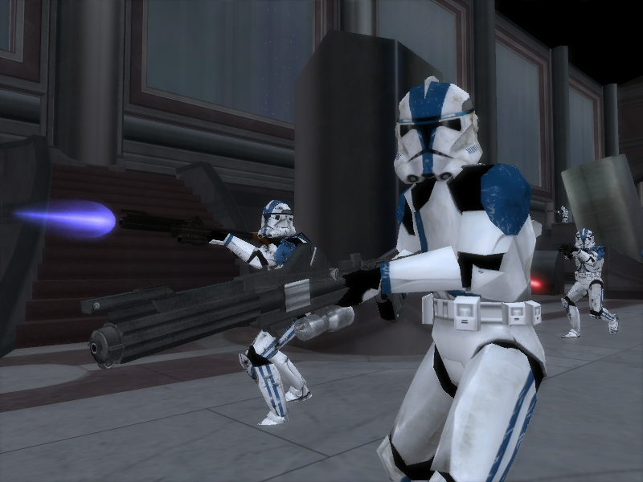

Eine Armee beschreibt den Zusammenschluss oder Verband kampferprobter Truppen (Soldaten). Diese unterstehen meist Regierungen, bzw. dessen militärischer Leitung. Die Armee beschreibt die Gesamtheit aller bewaffneten Kämpfer, welche zu staatlichen Einrichtungen gehören und dient zur Sicherung öffentlicher Ordnung und zum Schutz der Planeten welche unter dem Schutz dieser Regierung stehen. In Kriegen werden die Armeen auch genutzt, um territoriale Expansion möglich zu machen. So verfügte jeder Staat, egal ob Republik oder Imperium, über eine Armee. Manche Staaten verfügten zwar offiziell nicht über eine Armee (z.B. die Alte Republik) hatten aber trotzdem kampferprobte Soldaten, welche einsatzbereit waren.
Große Armee der Republik
Die Große Armee der Republik (GAR) war eine aus 3.200.000 Klonkriegern bestehende Armee, die in den Klonkriegen für die Galaktische Republik gegen die Konföderation unabhängiger Systeme kämpfte. Im Jahr 32 VSY begann der Klonprozess auf Kamino, nachdem der Jedi-Meister Sifo-Dyas den Auftrag zur Erschaffung einer Armee im Namen des Jedi-Rates erteilte. Tatsächlich stellte sich heraus, dass der Sith-Lord Darth Sidious hinter diesem Auftrag steckte, der die Republik in einen Krieg stürzen wollte, um sich in der Gestalt von Kanzler Palpatine Notstandsvollmachten erteilen zu lassen, um dadurch schließlich die Macht an sich reißen zu können. Sein neuer Schüler Darth Tyranus alias Graf Dooku warb den Kopfgeldjäger Jango Fett, welcher die genetische Vorlage der Armee bildete, auf einem der Monde von Bogden an. Aufgrund des genetisch beschleunigten Alterungsprozesses und des intensiven Trainings waren die Klone bereits zehn Jahre später mit dem Ausbruch der Klonkriege im Jahr 22 VSY einsatzbereit. Die GAR galt als eine der effizientesten und am besten ausgebildeten Armeen in der Galaxis, doch sie existierte nur drei Jahre lang, bis die Republik aufgelöst und durch das Galaktische Imperium ersetzt wurde. Im Zuge dessen wurde die GAR in die Imperiale Armee umgeformt.
Die Konföderation unabhängiger Systeme
Die Konföderation unabhängiger Systeme, kurz KUS, die Separatisten, Separatistenallianz oder im Piloten-Slang auch Sepis genannt, war eine eigenständige Regierung, die im Zuge einer galaxisweiten Separatistenbewegung zahlreiche Mitgliedswelten umwarb und dabei der Galaktischen Republik den Krieg erklärte. Der Konföderation traten insbesondere Welten bei, die mit ihrer vorhergehenden republikanischen Regierung unzufrieden waren und die nach Freiheit und Unabhängigkeit strebten. Dieser Separatismus führte im Jahr 22 VSY zum Ausbruch der Klonkriege, welche schließlich im Jahr 19 VSY mit der Niederlage der Konföderation und der Umgestaltung der Republik in das Galaktische Imperium endeten. Offenkundig wurde die Konföderation von Count Dooku angeführt, der im Hintergrund allerdings im Auftrag des Sith-Lords Darth Sidious handelte. Durch den Umstand, dass Darth Sidious gleichzeitig als Oberster Kanzler die Republik anführte, konnte er auf intrigante Art und Weise die Handlungen der Klonkriege steuern. In Wirklichkeit war die gesamte Separatistenbewegung Bestandteil von Palpatines Plan, die Republik zu stürzen und den Jedi-Orden zu zerschlagen.